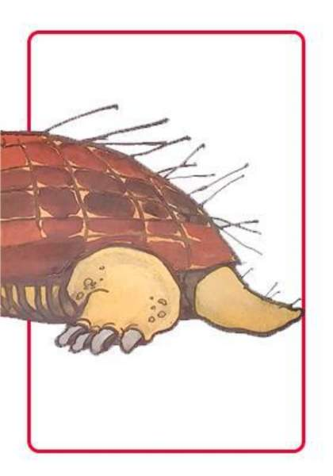
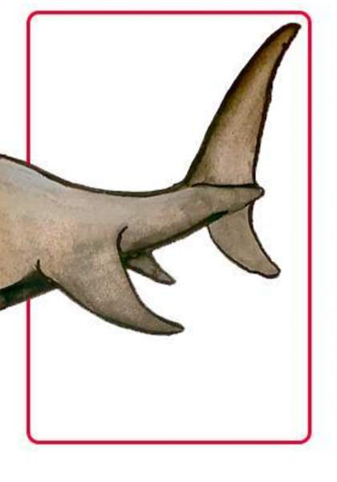

ÁREA LENGUA Y LITERATURA
¡Un animal bien raro ha llegado a visitarnos!
EDUCACIÓN PRIMARIA | SEGUNDO - TERCER GRADO
ÁREA LENGUA Y LITERATURA
EDUCACIÓN PRIMARIA | SEGUNDO - TERCER GRADO
ANTES DE INICIAR LA SECUENCIA
Tomarse el tiempo para leer todas las clases, los objetivos, las orientaciones, la preparación de recursos antes de la clase y presentación de desafíos a los alumnos.
Orientaciones
En la actividad 1 les proponemos que los alumnos y alumnas conozcan dos historias de animales raros. La historia ¡Gatopato! será contada a través un audio o un video y, la historia del Centauro indeciso, será leída en voz alta por ustedes con el soporte de una imagen.
Estas dos historias son el punto de partida para que puedan comprender mejor cómo resolver el desafío de la secuencia.
Si lo creen conveniente, pueden interrumpir las lecturas y jugar a sorprenderse con lo que los textos dicen; también, pueden detenerse para preguntarse por lo que va sucediendo para ayudarlos a entender la historia.
En la actividad 2, les proponemos una serie de preguntas para guiar y animar la conversación con los chicos sobre lo que han escuchado. Los invitamos también a dibujar una “selfie”.
Objetivos
Antes de la clase
Docentes que ya implementaron esta secuencia comparten algunos consejos. Escuchá el audio:
Entres palabras y dibujos nos encontramos para compartir lecturas y escrituras para crear. ¿Para crear qué cosa, pensarán ustedes?¡Sí! se van a convertir en creadores de unos animales que no existen en la vida real, que nunca vieron ni en las peliculas y que serán los ¡protagonistas de historias increíbles que ustedes escriban!¿están preparados?
No nos demoremos más, tengo que contarles historias que los están esperando. ¿Y por qué les digo que son extraños? Ah, me gusta verles esas caritas ¡ya se pusieron curiosos! Ya les voy a contar. ¡No se imaginan las cosas que les pasan a estos animales! Ya están llegando... ¿No me creen? Uh, cuántas preguntas estarán pensando: ¿cómo se llaman?, ¿cómo son?, ¿qué hacen?, ¿qué les pasa? ¡Esperen, que ahí vienen! ¡Escuchen!
La primera historia de animales extraños…
¿Es un gato o es un pato? No, señores y señoras, ¡este es un gatopato! ¿Quieren conocer qué le pasó? Escuchen la historia El gatopato y la princesa Monilda y vean lo que sucedió:
¿ Les dije que preparé dos historias? Y por aquí, va llegando un centauro que viene con muchas dudas. ¿Saben qué es un “centauro”? Según cuentan los que saben, el centauro es una criatura mitológica, mitad hombre y mitad caballo.
Luego de escuchar las dos historias guiar la conversación con los alumnos y alumnas sobre los animales a partir de preguntas guía. Es importante generar confianza, acompañar, dar la palabra y estimular la voz de alumnos o alumnas.
Para el cierre, proponer dibujar cómo sería una “selfie” de algún animal de las historias.
EN EL CUADERNO. Sugerencias de título y registro de actividad Animales raros
Escuchamos dos historias de animales. Pensamos y conversamos sobre los personajes.
|



|